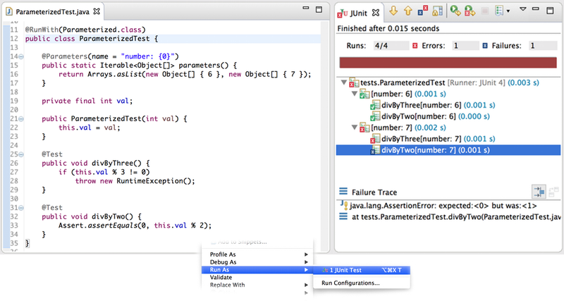
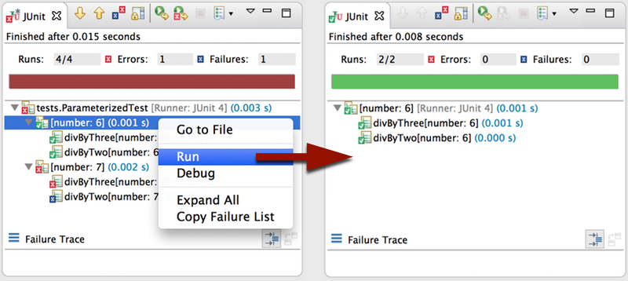
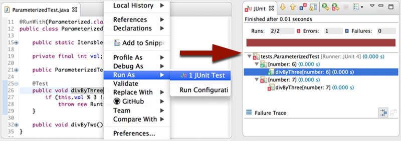

In Eclipse, the JUnit view nicely visualizes execution status and results of JUnit tests. JUnit tests usually are Java classes with test methods or Java classes annotated with @SuiteClasses, which compose multiple other test classes or suites.
But JUnit is more powerful than that. It allows you to implement custom test runners. Those test runners are responsible for creating a tree structure of test descriptions. Later the runner needs to execute all leafs of that tree as test cases.
A node in this tree of tests is not necessarily backed by a Java class, as it is for test suites. It can be something purely virtual. JUnit itself ships with a test runner for which this is true: org.junit.runners.Parameterized.
The screenshots above shows a Parameterized test on the left-hand-side and the Eclipse JUnit View (after the test has been executed) on the right-hand-side. The method parameters() returns a list of test data sets and the Parameterized runner will call the constructor of this test class for each data set. Consequently, the number of constructor parameters must match the number of items in each data set. For each data set, all test methods are executed and what we get, effectively, is a matrix test.
In the screenshot of the JUnit view we can see how the Parameterized runner presents the test matrix as a tree: The test class itself is the root node, every data set is a subtree and every entry of the test matrix is a leaf.
As of now (Eclipse Mars M4), it is possible to run individual subtrees by choosing "run" from the context menu. This effectively means to execute a row from the test matrix.
Additionally, it is now possible to run a single column from the test matrix by running a single method from a Parameterized test.
Note that in the picture on the left-hand-side I'm explicitly clicking on the method's name. Clicking elsewhere would execute all test methods from the class.
The new mechanism to filter down test description trees can achieve this without being specific to to JUnit's Parameterized runner: The filter first extracts the leading part of the test desription's name which is a valid Java identifier. The test is executed if this leading part exists and if it equals the to-be-executed method's name.
I would like to thank NumberFour for having me implement this fix specifically for Xpect. Gratitude also goes to itemis, my employer, who gave me the time to generalize and contribute the fix to Eclipse JDT. Also I would like to thank the JDT team for accepting the contribution.